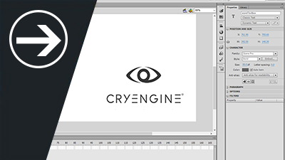

UI Quick Start
In this UI Quick Start we will learn how to create a basic character and apply an animation! After learning these steps and completing the task you can then go on to more difficult topics like Blendspaces or Mannequin for player functionality.

UI Overview
The UI system is your gateway to both the HUD's and menus that you create for your game. By default we use Scaleform for our UI creation and execute this through Adobe Flash. Within the overview you will find topics on localization of fonts and text to adhere to the different regions you will service your game to.
UI Reference
Most of the setup for UI's is contained within Flow Graph and is executed as level scripting logic. This is why you will want to examine the interface of Flow Graph closely to understand how you can create complex UI's without touching code.
UI Tutorials
The following videos will help you get started with making a UI for your project.